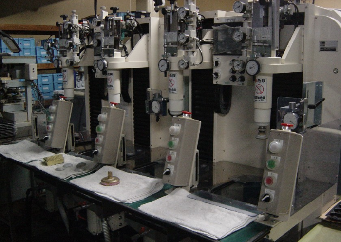
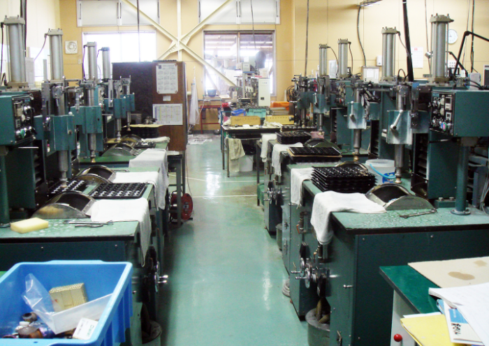
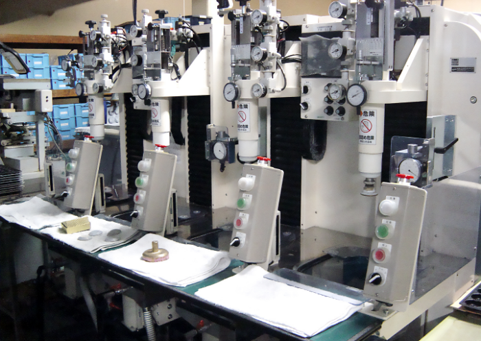
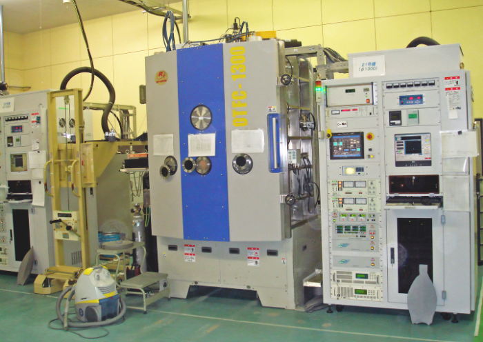

ゼネラルオプティックス
株式会社
TOP
会社案内
製品案内
主要設備
お知らせ
お問い合わせ
採用情報
TOP
主要設備
FACILITY
主要設備
荒摺加工
荒摺加工に関しての説明文が入ります。

荒摺機
荒摺加工
荒摺加工に関しての説明文が入ります。

斜軸研磨機

斜軸研磨機
荒摺加工
荒摺加工に関しての説明文が入ります。
手動芯取機
自動芯取機
荒摺加工
反射防止膜、低温反射防止膜、相面アルミナコート、ミラーコート、透過色度調整膜など、
様々なニーズにお応えします
手動蒸着機

自動蒸着機
連続蒸着機
洗浄機
荒摺加工に関しての説明文が入ります。
超音波洗浄機
設備及び加工能力
I. 光学レンズ加工
A.
荒摺加工: 30K個/月
※協力工場依頼含む
B.
球面研磨加工: 30K個/月
<斜軸高速研磨加工範囲: φ7～φ110>
ベレット機: 8台
(永田×1台、光進×5台、成瀬×1台、倉本×3台)
研磨機: 7台
(永田×2台、光進×4台、倉本×2台)
<球心研磨加工範囲: φ7～φ70>
ベレット機: 5台
(光進×5台、コジマエンジニア×2台)
研磨機: 5台
(光進×3台、時代×1台、コジマエンジニア×2台)
C.
芯取加工: 100K個/月
<斜軸高速研磨加工範囲: φ7～φ110>
ベレット機: 8台
(永田×1台、光進×5台、成瀬×1台、倉本×3台)
研磨機: 7台
(永田×2台、光進×4台、倉本×2台)
<球心研磨加工範囲: φ7～φ70>
ベレット機: 5台
(光進×5台、コジマエンジニア×2台)
研磨機: 5台
(光進×3台、時代×1台、コジマエンジニア×2台)
D.
反射防止膜加工 (単層、AR)
AR反射防止蒸着機: 3台 (φ800×3台)
AR連続蒸着機 (昭和真空製): 1台 (φ950)
E.
接合加工: 20K個/月
2ライン φ10～φ60
F.
墨加工: 20K個/月
2ライン φ10～φ150
II. 平面ガラス研磨加工
※現在協力工場依頼
平面ラップ: 128×1台 (田向精機)
平面研磨: 128×1台 (田向精機) (10K個/月) φ20~φ150
III. 多層膜蒸着加工 (自動蒸着機)
Φ1300蒸着機 (IAD無): 2台 (オプトラン製)
Φ1300蒸着機 (IAD付): 2台 (オプトラン製)
Φ1300蒸着機 (IAD付): 1台 (オプトラン製)
Φ1000遊星回転蒸着機: 1台 (シンクロン製) (アルミ・増反射膜)
IV. 洗浄機
※設置台数は各1台で、IPA乾燥、代替フロン乾燥
9槽式手動: 超音波洗浄機 (研磨、芯取用)
12槽式自動: 超音波洗浄機 (蒸着用)
11槽式手動: 超音波洗浄機 (蒸着用)
8槽式手動: 超音波洗浄機 (検査用)
V. 測定器
A.
分光光度計: 5台
※協力工場依頼含む
B.
干渉計: 参照レンズ
KIF-201: 4台 (OLYMPUS)
FD.7/1.5/3.0/6.0/w/R300/R400
AK-100: 1台 (AKION)
FD.77/1.5/2.2/3.3/4.8/7.2/11.0/25.0/w
RS(測定用ソフト(オリンパス) (RSI/IRR測定用)
GPI-XP/D IRS レーザーキット: 1台 (ZYGO)
C.
顕微鏡
芯出顕微鏡: 4台 (パール光学)
CM-106TV
ISP-5000 画像処理システム
工具類顕微鏡: 1台 (MITSUTOYO)
マイクロスコープ: 1台 (松電舎) 500万画素
実態類顕微鏡: 2台
OLYMPUS顕微鏡 1台×10~×67
CARTON顕微鏡 1台×10~×20
D.
恒温恒湿装置: 1台 (ISUZU)プログラム付
温度: -20℃~+130℃
湿度: 20%~98%RH
高温試験器: 1台 (小型プログラム電気炉 MMF-1)
温度: 100℃~900℃
VI. 外観検査
蛍光灯27W: 透過検査・反射検査
キャビンスライド 150W: 透過検査
エコライト: 透過検査
顕微鏡検査
VII. その他
真空梱包装置: 2台
コバ厚測定機: 1台
旋盤: 2台 (治工具作成、修正用)
お問い合わせ
CONTACT
各製品の材質・寸法等の仕様や
ご注文などお気軽にお問い合わせください。
メールでのお問い合わせ
電話でのお問い合わせ
0187-87-3322
(平日 8:00~17:00)
 主要設備
主要設備 お問い合わせ
お問い合わせ